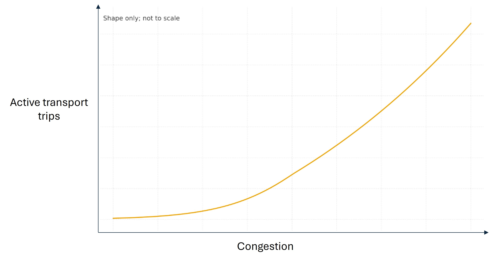
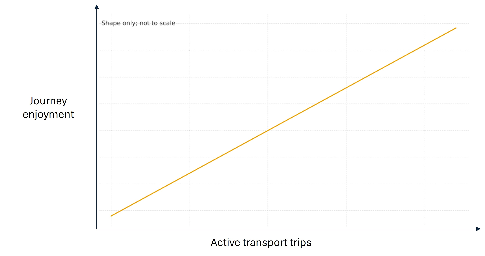
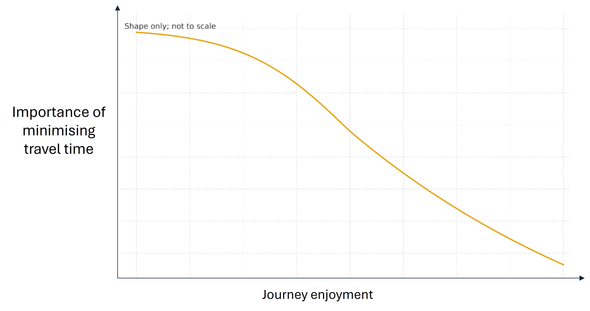
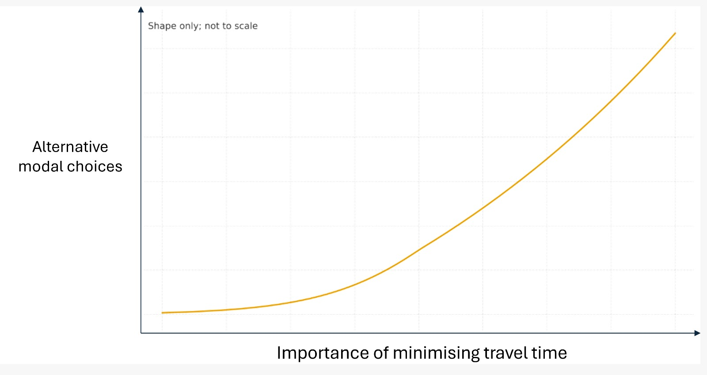
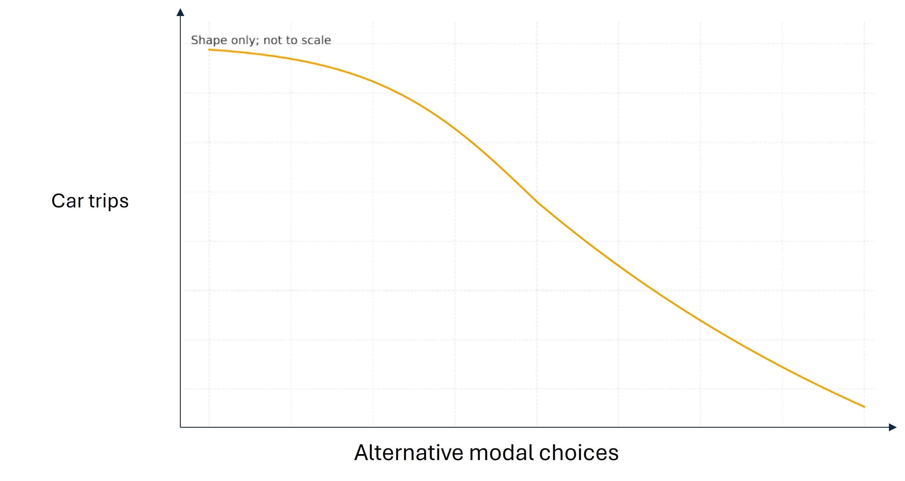
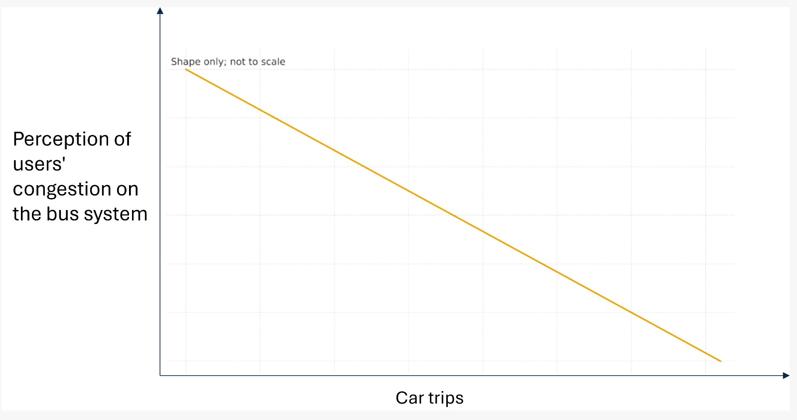

University of Sheffield × Universidad de los Andes
Transportation System Functional Forms
Data collection questionnaire — South Yorkshire region. For each scenario, move the slider to indicate where you stand between the two options presented.
Section 0 of 6
0%
Welcome
Welcome to this data collection form for the estimation of functional forms within the framework of the project led by the University of Sheffield and Universidad de los Andes (Bogotá, Colombia).
Here, you will be presented with a series of questions aimed at understanding more how mode preferences change when factors such as time, trips using active transport modes, car or bus, or journey enjoyment are considered.
These factors have been identified at a workshop held at the University of Sheffield on 16th November 2025 and we are asking for your help to turn what we learnt into actual numbers.
You will be asked to position sliders for 23 scenarios across 6 sections. The whole form takes approximately 8–12 minutes.
01
Congestion and active transport trips
How traffic conditions influence your choice of transport mode

Imagine you are commuting to the city (your nearest city or most usual destination) on a weekday morning. Depending on your individual circumstances you may consider active travel (walking, wheeling or cycling). For each traffic scenario below, move the slider to indicate where you would stand between the two options.
Case 1Very light traffic, free flowing
You will route through roads with segregated and shared paths, depending on availability along your journey and your preferences. Driving: expect ~12 min (very reliable). Cycling/walking: exactly 25 min.
Option AI'll drive if I have a car. Expect it will take 12 minutes. You can be quite certain of your arrival time.
Option BI'll consider cycling, walking or wheeling. Expect it will take 25 minutes. You will arrive exactly 25 minutes after setting off.
0255075100
Position: 50 — equally between A and B
Case 2Some queues at traffic lights and attention in corners
You will route through roads with segregated and shared paths. Driving: expect ~20 min (usually within ±5 min). Cycling/walking: exactly 25 min.
Option AI'll drive if I have a car. Expect it will take 20 minutes. Usually you are within 5 minutes of the expected time of arrival.
Option BI'll consider cycling, walking or wheeling. Expect it will take 25 minutes. You will arrive exactly 25 minutes after setting off.
0255075100
Position: 50 — equally between A and B
Case 3Peak traffic; frequent delays and slow speeds
Driving: expect ~25 min with uncertainty (usually within ±10 min). Cycling/walking: exactly 25 min.
Option AI'll drive if I have a car. Expect it will take 25 minutes. Usually you are within 5 minutes of the expected time of arrival.
Option BI'll consider cycling, walking or wheeling. Expect it will take 25 minutes. You will arrive exactly 25 minutes after setting off.
0255075100
Position: 50 — equally between A and B
Case 4Long queues; gridlock likely; highly unreliable
Driving: expect 30–35 min (can arrive 15 min late, hard to predict). Cycling/walking: exactly 25 min.
Option AI'll drive if I have a car. Expect it will take 30-35 minutes but with some uncertainty. You can arrive 15 minutes later than expected, but it is difficult to predict.
Option BI'll consider cycling, walking or wheeling. Expect it will take 25 minutes. You will arrive exactly 25 minutes after setting off.
0255075100
Position: 50 — equally between A and B
Case 5Near standstill; major junctions blocked
Driving: at least 40–45 min (arrival time very hard to predict). Cycling/walking: exactly 25 min.
Option AI'll drive if I have a car. Expect it will take at least 40-45 minutes. Hard to predict what time you will arrive at destination.
Option BI'll consider cycling, walking or wheeling. Expect it will take 25 minutes. You will arrive exactly 25 minutes after setting off.
0255075100
Position: 50 — equally between A and B
02
Active transport trips and journey enjoyment
How frequency of active travel relates to how much you enjoy journeys

Imagine you live in South Yorkshire, about 3 miles from your main daily destinations. You can choose between driving, public transport, walking or cycling.
Walking and cycling routes in your area are safe, green, and well-maintained, making these journeys pleasant and relaxing. When you walk or cycle, the trip feels enjoyable and stress-free compared to travelling by car, especially during busy periods.
In each case, move the slider based on where would you stand between the two options:
Case 1No or very few active travel trips
You walk, wheel or cycle once a week and you feel you are the only one doing so.
Option ANull journey enjoyment
Option BMaximum state of joy
0255075100
Position: 50 — equally between A and B
Case 2Many active travel trips
You walk, wheel or cycle at least three times a week and you see more people who, like you, choose the same mode of active travel.
Option ANull journey enjoyment
Option BMaximum state of joy
0255075100
Position: 50 — equally between A and B
03
Journey enjoyment and importance of minimising travel time
How your travel experience shapes how much you value arriving quickly

Now think about your usual daily trips in South Yorkshire (for example, commuting to work or study, or travelling to local activities).
In the following situations, imagine that the experience of travelling changes, making your journeys more or less enjoyable. For each situation, consider how important it would be for you to minimise travel time—that is, how much you would value arriving as quickly as possible rather than spending additional time travelling.
In each case, move the slider based on where would you stand between the two options:
Case 1None or null journey enjoyment
Travelling is stressful, boring, uncomfortable, or unpleasant.
Option AMinimising travel time is not important to you. You're okay to spend longer on the journey.
Option BMinimising travel time is very important to you. You wonder how many more things you could do instead with that time.
0255075100
Position: 50 — equally between A and B
Case 2Very low enjoyment
Frustrations and discomforts of transit are often the norm, but interrupted by enough positive moments to keep the journey from being a total loss.
Option AMinimising travel time is not important to you. You’re okay to spend longer on the journey..
Option BMinimising travel time is very important to you. You wonder how many more things you could do instead with that time.
0255075100
Position: 50 — equally between A and B
Case 3Neutral journey enjoyment
Travelling often feels boring or uncomfortable, but generally tolerable. You do not enjoy the journey, but you can cope with it and there are definitely positive aspects throughout.
Option AMinimising travel time is not important to you. You’re okay to spend longer on the journey.
Option BMinimising travel time is very important to you. You wonder how many more things you could do instead with that time.
0255075100
Position: 50 — equally between A and B
Case 4Enjoyable journey
Travelling itself feels pleasant and rewarding. It takes the time it takes but you are comfortable with the experience of the trip.
Option AMinimising travel time is not important to you. You’re okay to spend longer on the journey.
Option BMinimising travel time is very important to you. You wonder how many more things you could do instead with that time.
0255075100
Position: 50 — equally between A and B
Case 5Very high journey enjoyment
Travelling feels relaxing, pleasant, or engaging, and you genuinely enjoy spending time during the journey.
Option AMinimising travel time is not important to you. You’re okay to spend longer on the journey.
Option BMinimising travel time is very important to you. You wonder how many more things you could do instead with that time.
0255075100
Position: 50 — equally between A and B
04
Importance of minimising travel time and alternative modal choices
How time pressure influences your perceived freedom to choose transport modes

In the following situations, imagine that the freedom you perceive to choose between different transport modes varies, shaping how flexible or limited your daily travel options feel.
For each situation, consider the extent to which you would feel you have alternative modal choices—that is, how much you perceive having practical, accessible transport options that allow you to decide how to travel. In each case, move the slider based on where would you stand between the two options:
Case 1Does not consider minimising travel time to be important
You are comfortable spending longer on the journey and do not feel that extra time could be better used elsewhere.
Option AI would stick to my usual transport choice — there is only one transport mode realistically available.
Option BI would explore alternative modes — I perceive multiple transport modes as genuinely available, accessible, and practical.
0255075100
Position: 50 — equally between A and B
Case 2Generally unconcerned about minimising travel time.
You prefer to take your time getting there, and you don’t feel any pressure to shorten the journey.
Option AI would stick to my usual transport choice — there is only one transport mode realistically available.
Option BI would explore alternative modes — I perceive multiple transport modes as genuinely available, accessible, and practical.
0255075100
Position: 50 — equally between A and B
Case 3Neutral about minimising travel time
You neither seek to reduce travel time nor deliberately prolong the journey; both shorter and longer trips feel equally acceptable.
Option AI would stick to my usual transport choice — there is only one transport mode realistically available.
Option BI would explore alternative modes — I perceive multiple transport modes as genuinely available, accessible, and practical.
0255075100
Position: 50 — equally between A and B
Case 4Tends to value minimising travel time
You generally prefer to arrive sooner and often feel that long journeys take time away from other things you would rather be doing.
Option AI would stick to my usual transport choice — there is only one transport mode realistically available.
Option BI would explore alternative modes — I perceive multiple transport modes as genuinely available, accessible, and practical.
0255075100
Position: 50 — equally between A and B
Case 5Considers minimising travel time to be very important.
Minimising travel time is very important to you. You wonder how many more things you could do instead with that time.
Option AI would stick to my usual transport choice — there is only one transport mode realistically available.
Option BI would explore alternative modes — I perceive multiple transport modes as genuinely available, accessible, and practical.
0255075100
Position: 50 — equally between A and B
05
Relationship between alternative modal choices and car trips
How the availability of alternatives affects your car use

Now think about your usual daily trips in South Yorkshire (for example, commuting to work or study, going to local shops, or travelling to leisure activities).
In the following situations, imagine that you may choose between travelling by car and different transport modes. For each case, think about how many of your daily trips you would make by car and move the slider based on where would you stand between the two options:
Case 1Very limited alternatives
There are one or two alternatives to car use, but they are inconvenient or unreliable.
Option AI would keep the number of daily car trips unchanged. Consider car to travel as the unique mode of transportation. A usual number of car trips is maintained.
Option BI would reduce the number of my daily trips by car. There are acceptable alternative options i.e. car, motorbike, or public transport. There is a slight reduction in the daily number of car trips.
0255075100
Position: 50 — equally between A and B
Case 2Some alternatives available
I have a few viable alternatives to using the car, though none are clearly attractive.
Option AI would keep the number of daily car trips unchanged. Consider car to travel as the unique mode of transportation. A usual number of car trips is maintained.
Option BI would reduce the number of my daily trips by car. There are acceptable alternative options i.e. car, motorbike, public transport, or cycling. There is a reduction in the daily number of car trips.
0255075100
Position: 50 — equally between A and B
Case 3Several good alternatives
I have multiple convenient and realistic transport options to choose from.
Option AI would keep the number of daily car trips unchanged. Consider car to travel as the unique mode of transportation. A usual number of car trips is maintained.
Option BI would reduce the number of my daily trips by car. There are acceptable alternative options i.e. car, motorbike, public transport, cycling, or wheeling. There is a significant reduction in the daily number of car trips.
0255075100
Position: 50 — equally between A and B
Case 4Many options to travel
I have a wide range of convenient, reliable, and attractive transport options.
Option AI would keep the number of daily car trips unchanged. Consider car to travel as the unique mode of transportation. A usual number of car trips is maintained.
Option BI would reduce the number of my daily trips by car. There are acceptable alternative options i.e. car, motorbike, public transport, cycling, wheeling, skating, among others. There is a significant reduction in the daily number of car trips.
0255075100
Position: 50 — equally between A and B
06
Car trips and perception of users´congestion on the bus system
How your car use relates to your perception of congestion on the bus system.

Finally, in the following situations, imagine how your use of the car changes. For each situation, indicate your perception of congestion on the bus system.
In each case, move the slider based on where you would stand between the two options:
Case 1Few car trips
You rarely use your car, opting instead for other modes of transport more often.
Option AI would perceive no congestion on the bus system.
Option BI would perceive very high congestion on the bus system.
0255075100
Position: 50 — equally between A and B
Case 2Many car trips
You use a car as your primary mode of transport for most of your trips.
Option AI would perceive no congestion on the bus system.
Option BI would perceive some congestion on the bus system.
0255075100
Position: 50 — equally between A and B
Thank you for completing the survey
Your input is greatly appreciated and contributes to a better understanding of people's daily mobility. When you click Submit, your responses will be sent directly to the research team's spreadsheet — no email needed.
Your responses go directly to Google Sheets. You will see a confirmation message here when the submission is successful.
✅ Responses submitted successfully!
Your data has been recorded and a CSV backup has been downloaded automatically. You can close this page.
⚠️ Could not connect to Google Sheets
This usually means the script URL has not been configured yet. Your responses were not lost — download them as a CSV backup and send to the research team.